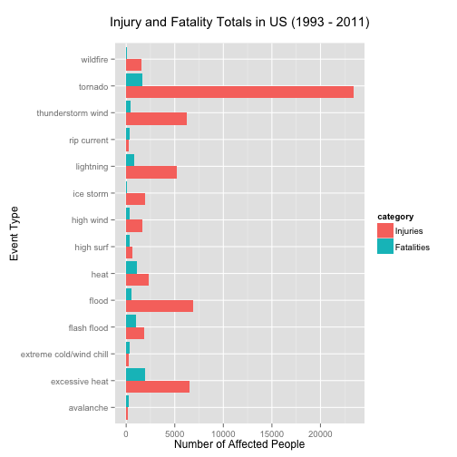

It's well known that severe weather events can have a major impact on municipal well-being; if a tornado touches down in your city, you're screwed. This report extracts and presents the primary weather types contributing to agricultural, physical and health damage in the US.
This source data was a dump of NOAA storm events database (http://www.ncdc.noaa.gov/stormevents/) from 1950 to 2011. Data processing was assisted by use of a reference document: "NATIONAL WEATHER SERVICE INSTRUCTION 10-1605", included here as the file "repdata-peer2_doc-pd01016005curr.pdf". This documents groups all weather events into a set of 48 categories, but many of the EVTYPE records in the database did not match this set.
Much of the work preparing this report was creating a set of patterns that could be applied to coerce all records into these 48 categories. After assignment to events types, the data corresponding to events with significant impact (here defined as contributing greater than two percent to the total damage value) are extracted and plotted by event type.
All supporting data files, documents and source code can be found at: https://github.com/sheldon-white/RepData_PeerAssessment2
Load the raw storm data
library(stringr)
library(plyr)
library(reshape)
##
## Attaching package: 'reshape'
##
## The following objects are masked from 'package:plyr':
##
## rename, round_any
library(ggplot2)
stormData = read.csv(bzfile("repdata-data-StormData.csv.bz2"))
Only retain the rows that contain damage, injuries or fatalities; damage exponents must be in the accepted set. We can also discard most of the columns, but we'll also need the 'year' value
damageData = stormData[,c("FATALITIES", "INJURIES", "PROPDMG", "PROPDMGEXP", "CROPDMG", "CROPDMGEXP", "BGN_DATE", "EVTYPE")]
damageData = damageData[damageData$INJURIES > 0 |
damageData$FATALITIES > 0 |
damageData$PROPDMGEXP %in% c("H", "M", "K", "B") |
damageData$CROPDMGEXP %in% c("H", "M", "K", "B"),]
damageData$year = strptime(damageData$BGN_DATE, "%m/%d/%Y %H:%M:%S")$year + 1900
class(damageData$year) = "integer"
Load the standard set of event types, convert to patterns for exact matching. For convenience, all patterns are matched using regular expressions in a single pass.
evTypes = read.csv("eventtypes.csv", header = FALSE)
evTypes$V1 = str_trim(tolower(evTypes$V1))
evTypes$evtype = evTypes$V1
colnames(evTypes) = c("pattern", "evtype")
evTypes$pattern = paste("^", evTypes$pattern, "$", sep="")
Add the additional matching regular expressions. These are pairs of (pattern, standard-event) strings.
rules = c(
"(typhoon|hurricane)", "hurricane (typhoon)",
"(wall cloud|micoburst|microburst|downburst|turbulence|thunder|tstm)", "thunderstorm wind",
"chill", "extreme cold/wind chill",
"wind", "high wind",
"fog and cold temperatures", "freezing fog",
"fog", "dense fog",
"gustnado", "high wind",
"(tornado|torndao)", "tornado",
"(ligntning|lighting)", "lightning",
"(heavy|hvy|excessive|torrential|record).+(rain|rainfall|rainstorm|precipatation|precipitation)", "heavy rain",
"(shower|rainstorm|rain damage|prolonged rain)", "heavy rain",
"mixed precipitation", "heavy rain",
"(heavy|hvy|excessive|torrential|record).+snow", "heavy snow",
"snow", "winter weather",
"hail", "hail",
"(sleet|freezing)", "sleet",
"(swell|surf)", "high surf",
"rip currents", "rip currents",
"spout", "waterspout",
"(coastal storm|surge)", "storm surge/tide",
"(extreme|severe|heavy|hvy|excessive|torrential|record|unusual).+cold", "extreme cold/wind chill",
"hypothermia", "extreme cold/wind chill",
"cold", "cold/wind chill",
"low temperature", "cold/wind chill",
"(frost|freeze)", "frost/freeze",
"(tide)", "storm surge/tide",
"(wave| seas)", "high surf",
"fire", "wildfire",
"wint", "winter weather",
"extreme heat", "heat",
"(hot|warm)", "heat",
"(slide|mud|landslump)", "debris flow",
"avalance", "avalanche",
"flood", "flash flood",
"(high water|fld|rapidly rising water)", "flood",
"dust", "dust storm",
"tropical storm", "tropical storm",
"(ice|icy|glaze)", "frost/freeze"
)
ruleset = data.frame(matrix(rules, ncol=2, byrow=TRUE))
colnames(ruleset) = c("pattern", "evtype")
allRules = rbind(evTypes, ruleset)
Then assign all possible records into the official categories.
damageData$normalizedEvtype = str_trim(tolower(damageData$EVTYPE))
damageData$event = NA
a = apply(allRules, 1, function(row) {
pattern = row[1]
evtype = row[2]
matches = grepl(pattern, damageData$normalizedEvtype) & is.na(damageData$event)
damageData[matches, "event"] <<- evtype
})
Some samples are taken to see how the event types are reported in the past. "Complete" events reported in or before 1980:
paste(unique(damageData$event[damageData$year <= 1980 & !is.na(damageData$event)]), collapse = ",")
## [1] "tornado"
"Complete" events reported in or before 1980:
paste(unique(damageData$event[damageData$year <= 1990 & !is.na(damageData$event)]), collapse = ",")
## [1] "tornado,thunderstorm wind,hail"
"Complete" events reported in or before 1980:
paste(unique(damageData$event[damageData$year <= 1993 & !is.na(damageData$event)]), collapse = ",")
## [1] "tornado,thunderstorm wind,hail,winter storm,lightning,high wind,high surf,coastal flood,heavy rain,flash flood,flood,heavy snow,ice storm,wildfire,winter weather,debris flow,dense fog,blizzard,cold/wind chill,extreme cold/wind chill,waterspout,storm surge/tide,hurricane (typhoon),avalanche,sleet,frost/freeze,heat,dust devil,drought,funnel cloud,dust storm,tropical storm"
So we don't have a good representation of event types in the older records cleaned and filtered dataset. Tornadoes and thunderstorms could be heavily overrepresented in the totals, especially taking inflation into account. We continue processing with records from 1993 onward.
damageData = damageData[damageData$year >= 1993,]
Now load the inflation adjustment factors; add inflation data to the damageData table.
inflationFactors = read.csv("inflationFactors.csv", header = FALSE)
colnames(inflationFactors) = c("year", "factor")
class(inflationFactors$year) = "integer"
inflation = function(y) {
inflationFactors$factor[inflationFactors$year == y]
}
damageData$inflationFactor = as.numeric(lapply(damageData$year, inflation))
Now convert the damage cost records into a usable form, scaling them with the damage exponents and the inflation factor.
damageData$PROPDMGEXP = toupper(damageData$PROPDMGEXP)
damageData$CROPDMGEXP = toupper(damageData$CROPDMGEXP)
damageData$propMultiplier = 1
damageData$propMultiplier[damageData$PROPDMGEXP == "H"] = 100
damageData$propMultiplier[damageData$PROPDMGEXP == "K"] = 1000
damageData$propMultiplier[damageData$PROPDMGEXP == "M"] = 1000000
damageData$propMultiplier[damageData$PROPDMGEXP == "B"] = 1000000000
damageData$cropMultiplier = 1
damageData$cropMultiplier[damageData$CROPDMGEXP == "H"] = 100
damageData$cropMultiplier[damageData$CROPDMGEXP == "K"] = 1000
damageData$cropMultiplier[damageData$CROPDMGEXP == "M"] = 1000000
damageData$cropMultiplier[damageData$CROPDMGEXP == "B"] = 1000000000
damageData$propDmgDollars = damageData$propMultiplier * damageData$PROPDMG / damageData$inflationFactor
damageData$cropDmgDollars = damageData$cropMultiplier * damageData$CROPDMG / damageData$inflationFactor
Extract the minimum set of columns for data visualization, reshape the data into a final format. We separate damage values from health values at this point.
damage = damageData[!is.na(damageData$event), c("year", "FATALITIES", "INJURIES", "propDmgDollars", "cropDmgDollars", "event")]
damage$event = factor(damage$event)
totals = ddply(damage, .(event), summarize,
injuries = sum(INJURIES),
fatalities = sum(FATALITIES),
cropDamage = sum(cropDmgDollars),
propDamage = sum(propDmgDollars))
We calculate the relative contributions of each event type to it's category (needed a little later).
totals$propDamagePct = 100 * totals$propDamage / sum(totals$propDamage)
totals$cropDamagePct = 100 * totals$cropDamage / sum(totals$cropDamage)
totals$injuriesPct = 100 * totals$injuries / sum(totals$injuries)
totals$fatalitiesPct = 100 * totals$fatalities / sum(totals$fatalities)
totals = ddply(damage, .(event), summarize,
injuries = sum(INJURIES),
fatalities = sum(FATALITIES),
cropDamage = sum(cropDmgDollars),
propDamage = sum(propDmgDollars))
totals$propDamagePct = 100 * totals$propDamage / sum(totals$propDamage)
totals$cropDamagePct = 100 * totals$cropDamage / sum(totals$cropDamage)
totals$injuriesPct = 100 * totals$injuries / sum(totals$injuries)
totals$fatalitiesPct = 100 * totals$fatalities / sum(totals$fatalities)
damageEvents = totals[,c("event","propDamage", "propDamagePct", "cropDamage", "cropDamagePct")]
healthEvents = totals[,c("event","injuries", "injuriesPct", "fatalities", "fatalitiesPct")]
Gather some final statistics about the data processing.
uncategorized = damageData[is.na(damageData$event),]
message("uncategorized row count: ", nrow(uncategorized))
## uncategorized row count: 95
message("uncategorized damage: ", sum(uncategorized$propDmgDollars) + sum(uncategorized$cropDmgDollars))
## uncategorized damage: 246438232.472558
message("categorized damage: ", sum(damage$propDmgDollars) + sum(damage$cropDmgDollars))
## categorized damage: 533869672318.179
For the first two plots we only retain events that are a significant contributor (> %2) to the damage and health totals.
damageEvents = totals[,c("event","propDamage", "propDamagePct", "cropDamage", "cropDamagePct")]
healthEvents = totals[,c("event","injuries", "injuriesPct", "fatalities", "fatalitiesPct")]
worstDamageEvents = damageEvents[damageEvents$propDamagePct > 2 | damageEvents$cropDamagePct > 2, c("event","propDamage", "cropDamage")]
colnames(worstDamageEvents)[2:3] = c("Property Damage", "Crop Damage")
worstHealthEvents = healthEvents[healthEvents$injuriesPct > 2 | healthEvents$fatalitiesPct > 2, c("event","injuries", "fatalities")]
colnames(worstHealthEvents)[2:3] = c("Injuries", "Fatalities")
damageCollated = melt(worstDamageEvents, id=c("event"))
healthCollated = melt(worstHealthEvents, id=c("event"))
colnames(damageCollated)[2] = "category"
colnames(healthCollated)[2] = "category"
damageCollated$value = damageCollated$value / 1000000
The first plot shows the total damage due to event types with a major impact:
ggplot(damageCollated, aes(event, value)) +
geom_bar(aes(fill = category), position = "dodge", stat = "identity") + coord_flip() +
xlab("Event Type") + ylab("Total Damage (Millons of Dollars)") + ggtitle("Damage Totals in US (1993 - 2011)\n")
Major points revealed by this plot:
The second plot shows the injuries and fatalities due to event types with a major impact:
ggplot(healthCollated, aes(event, value)) +
geom_bar(aes(fill = category), position = "dodge", stat="identity") + coord_flip() +
xlab("Event Type") + ylab("Number of Affected People") + ggtitle("Injury and Fatality Totals in US (1993 - 2011)\n")

Major points revealed by this plot:
It is interesting to see the year-by-year trends in reported damages. We can plot the annual costs due to the most destructive weather types:
subset = damage[damage$event %in% c("tornado", "flood", "hurricane (typhoon)"),]
totals = ddply(subset, c("event", "year"), summarize,
injuries = sum(INJURIES),
fatalities = sum(FATALITIES),
cropDamage = sum(cropDmgDollars),
propDamage = sum(propDmgDollars))
totalsMelted = melt(totals, id=c("event", "year"))
ggplot(data=totalsMelted, aes(x=year, y = value, colour = event, group = event)) +
geom_line() + facet_wrap(~variable, scales = "free")